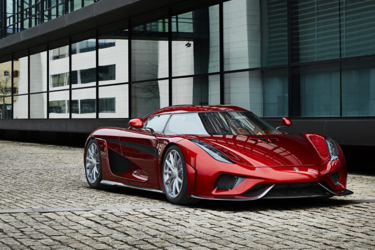
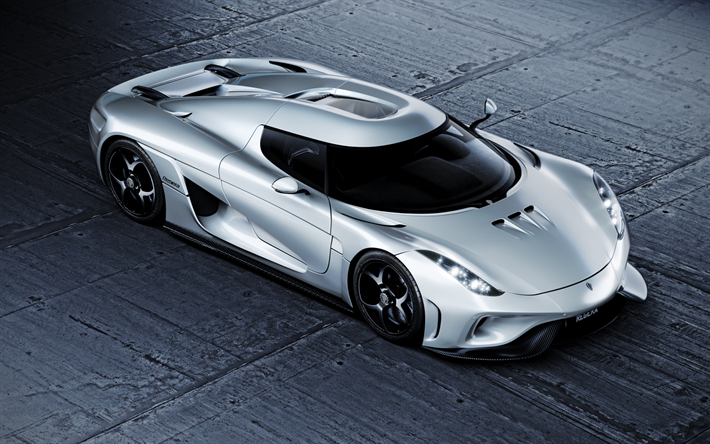
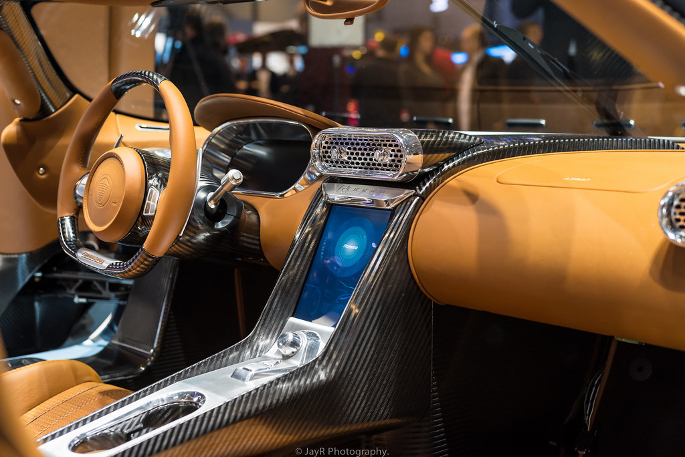

 Koenigsegg Regera, Koenigsegg Direct Drive adlı yeni güç aktarma teknolojisi ile güçlü bir çift turbo V8 yanmalı motoru üç elektrik motoru ve en yeni pil gücü ile birleştiriyor. Bu devrim niteliğindeki teknoloji, geleneksel şanzımanı sökerek aracı daha hafif ve daha verimli hale getiriyor. Koenigsegg Regera Koenigsegg’in geleneksel aşırı, hafif, yarış benzeri yol otomobillerine lüks bir Megacar alternatifi olarak özel olarak tasarlanmıştır. Regera, egzoz uzmanları ve ortakları Akrapovic ile birlikte özel olarak tasarlanmış, ayarlanmış bir titanyum egzoz sistemine sahiptir. Bu eşsiz egzoz sistemi, Christian tarafından tasarlanan, en az yarım yüzyıl boyunca üretim arabalarında görülmeyen bir tasarım olan bir balık kuyruğu çıkışını içerir - geçmişten performans arabalarının sesini geri getirir!
 Geleneksel Koenigseggs her zaman şaşırtıcı düzeyde pratiklik, inanılmaz konforları ve özellikleri yaşarken, birincil odak noktamız her zaman gezegendeki en hızlı arabaları - bir yarış pistinde veya başka bir yerde yapmaktı. Koenigsegg Regera bu geleneği sürdürüyor, ancak olağanüstü hızı, üstün konforu ve eşsiz Direct Drive deneyimini harmanlayan yenilikçi teknolojiyle. Her Koenigsegg'in kalbi ve ruhu, İçten Yanmalı Motor - ICE'dir. Regera'nın ICE'si kardeşlerinin yolunu, kanıtlanmış ve son derece güvenilir Koenigsegg kuru karterli ikiz turbo, DOHC, 5.0 litre V8'i takip ediyor.
 Regera'nın Direct Drive şanzımanı, kabarma performansı sağlarken aynı zamanda akla gelebilecek en yumuşak, en yatıştırıcı sürüş deneyimlerinden birini sunar. Tamamen ruh halinize bağlı olan gerçek bir Jekyll ve Hyde deneyimi. Koenigsegg, kompakt hafif hidrolik teknolojisindeki son gelişmeler sayesinde Regera'nın tamamını neredeyse hiç kilo vermeden robotize etmeyi başardı. Regera, standart olarak aktif ön ve arka kanatlar, şasi kontrolü ve kaldırma sistemi gibi işlevlere sahiptir, bu nedenle hidrolik pompalar ve akümülatörler, kapılarımızın ve ön / arka davlumbazların otomasyonunu uygulamak için zaten mevcuttu. Autoskin hidroliği, benzer ağırlıktaki gaz desteklerinin yerini alarak minimum ağırlık etkisi sağlar.
Copyright © Sertan Mangan 2020